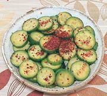

|
California Quick CucumbersCalifornia | ||||
| Makes: Effort: Sched: DoAhead: |
1-1/2 cups * 7 min Yes |
A delicious crunchy Cucumber Salad, ready to serve in just a few minutes - California Fusion Cuisine - see Back Story | |||
|
14 ----- 1/2 2 2 1/2 2/3 ----- |
oz --- t T T T t --- |
Cucumbers (1) -- Dressing Salt Rice Vinegar Soy Sauce Sesame Oil, dark Chili Flake (2) ------------ |
Make - (7 min)
|